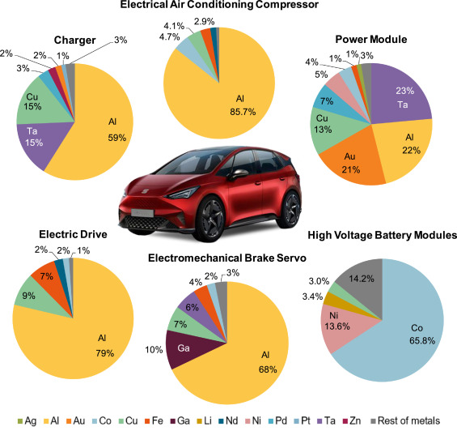

Electrical energy is used to power our world in many projects big to small, including electrification,
in this article we discuss the electrification of vehicles. Electrified vehicles include Battery Electric (BEV),
Hybrid electric (HEV) and Plug in Hybrid electric (PHEV). Each class of EV emits less CO2 than a typical car,
although charging is much slower than fuelling and the production of EVs is more polluting than your typical petrol car.
Overhead wires for trains transmit electrical energy via the pantograph on the roof of the train
and third rails lie beside the rail tracks to power trains. Some concerns are that wires are vulnerable to strong winds and heavy snowfall
and that third rails use high voltages so anyone that touches it could be severely injured or killed.
The benefits of electrification are clear in principle, but many challenges must first be overcome.
Introduction
Introduction to Electricity
Figure 1 – A picture of a lightning bolt above the Tuscon, Arizona skyline (National Geographic, no date)
Electricity was first known as lightning, "a potent force of nature formed of a bolt
ejected from the clouds towards the ground (or vice versa) caused by an imbalance of electrical charges"
(National Geographic, no date). We discovered we could generate power from lightning, so it has been at
the core of several inventions e.g. the light bulb, batteries, electrical machinery and domestic purposes
(Just Energy, 2022). Now electricity powers our entire world, from communications technology, electronics
and home appliances.
Analysis and discussion
Impact on Cars
Everyone has been in a car before. They are necessary for transporting people and valuable goods.
Private vehicles provide us with “independence and freedom of mobility” while operating on our own schedules. For reference, there are over 246 million cars in the EU,
all 11.8 years old on average. (ACEA – European Automobile Manufacturers’ Association, 2022)
But they don’t have the best environmental impacts. ICE (internal combustion engines)
emit harmful greenhouse gases like CO2 linked to global warming.
To lower emissions, cars were electrified. For example, electric cars, or BEVs (battery electric vehicles) use an electric motor
powered by batteries storing electrical energy (US Department of Energy, no date). These cars do not emit greenhouse gases while running
and can be completely powered from home or publicly at charging stations both slow and fast.
Level 1/2 chargers are commonly used by home EV owners which charge at a rate of 5 to 25 hours of range per hour charging (1.9-19.2kW).
Fast chargers for public use can charge over 150 miles of range in just 30 minutes. (US Department of Energy, no date)
However, the driving range concerns most drivers, and EVs are still a developing technology. Hybrid vehicles combine an ICE with an electric motor.
Hybrid electric vehicles cannot be plugged in to charge (See Figure 2).
Figure 2 – An image showing how a hybrid vehicle works - (US Department of Energy, no date)
A plug-in hybrid (PHEV) is petrol/ diesel fuelled and plugged in to charge (See Figure 3).
Figure 3 – An image showing how a plug-in hybrid works (KIA UK, no date)
Impact on Public Transport
Other vehicles contribute to greenhouse gas emissions like trains and air transport used for public or cargo use.
For example, 1.8 billion people travel by rail annually in the UK. (Network Rail, no date)
Trains used to be steam locomotives which were fuelled by burning materials like coal to produce steam.
(Iowa State University –Institute for transportation, 2016) Since transport is so important to society, trains were electrified.
Methods of electrifying trains include overhead lines and third rail. Apart from lower running emissions,
electrified trains are quieter, making them suitable for construction near towns and cities if necessary.
Figure 4: An image of overhead wires
If you live near a railway line, then you have most likely seen wires like the picture above (See Figure 4).
These overhead wires provide power to trains. (Swartz Engineering, 2024)
Figure 5: An image of the pantograph
The pantograph on the roof of trains (see Figure 5) collects power while operating by touching the electric wires.
Benefits of overhead wires include efficient power transmission over long distances due to their high voltage,
they are also 33% cheaper to manufacture and maintain.
Figure 6: An image of third rail
Another method of electrifying railways is third rail (see Figure 6), which provides power using a conductor rail placed beside rails,
compatible trains use metal contact blocks. Over 30% of trains in the UK rail network are powered by third rail.
Some advantages include less infrastructure modifications needed,
more affordable, better suited for urban transit like the Underground and less affected by extreme weather conditions.
(Railway Technology, 2023)
Drawbacks of Electrification
Despite the stated benefits, there are some drawbacks.
Overhead wires are vulnerable to poor weather conditions like strong winds and heavy snowfall causing wires to break,
nearby infrastructure may need modification or relocation to provide sufficient clearance.
Third rails have high voltages so if someone made contact, they could receive a severe or fatal electric shock.
They are less suitable for high-speed railways and longer, heavier trains. (Railway Technology, 2023)
Despite having zero running emissions, electrified vehicles still have some disadvantages, such as range.
Regular EVs are limited by their range and charging speed,
more so in cold weather due to chemical reactions in batteries slowing. (Consumer Reports,2024)
While petrol and diesel cars are fuelled quickly, electric vehicles can take up to half an hour or even longer.
It is also worth considering that charging spots are limited in certain regions.
Their batteries (See Figure 7) use many raw metals and materials meaning EVs are more polluting and expensive to produce (see Figure 8).
(Better Planet Education, 2024).
Figure 7: An image of the battery under an electric car

Figure 8: An image showing the materials used in EVs
Conclusion
The UK plans to ban the sale of new fuel-based vehicles by 2035 including hybrids,
only allowing new BEVs, but is that too soon for such a change? (Pod Point, 2024)
Although charging spots and EV ranges grow, vehicles such as lorries will need to run on fuel since they travel further distances.
Overall, the benefits of electrifying trains heavily outweigh the drawbacks and should be further produced to replace steam trains.
I also believe that fuel vehicles cannot be phased out for the next 50 years due to current infrastructure
so some hybrid vehicles should be excluded from this ban for long distance journeys, and ICE vehicles should be banned for public sale.


 Figure 3 – An image showing how a plug-in hybrid works (KIA UK, no date)
Figure 3 – An image showing how a plug-in hybrid works (KIA UK, no date)
 Figure 4: An image of overhead wires
If you live near a railway line, then you have most likely seen wires like the picture above (See Figure 4).
These overhead wires provide power to trains. (Swartz Engineering, 2024)
Figure 5: An image of the pantograph
The pantograph on the roof of trains (see Figure 5) collects power while operating by touching the electric wires.
Benefits of overhead wires include efficient power transmission over long distances due to their high voltage,
they are also 33% cheaper to manufacture and maintain.
Figure 6: An image of third rail
Another method of electrifying railways is third rail (see Figure 6), which provides power using a conductor rail placed beside rails,
compatible trains use metal contact blocks. Over 30% of trains in the UK rail network are powered by third rail.
Some advantages include less infrastructure modifications needed,
more affordable, better suited for urban transit like the Underground and less affected by extreme weather conditions.
(Railway Technology, 2023)
Figure 4: An image of overhead wires
If you live near a railway line, then you have most likely seen wires like the picture above (See Figure 4).
These overhead wires provide power to trains. (Swartz Engineering, 2024)
Figure 5: An image of the pantograph
The pantograph on the roof of trains (see Figure 5) collects power while operating by touching the electric wires.
Benefits of overhead wires include efficient power transmission over long distances due to their high voltage,
they are also 33% cheaper to manufacture and maintain.
Figure 6: An image of third rail
Another method of electrifying railways is third rail (see Figure 6), which provides power using a conductor rail placed beside rails,
compatible trains use metal contact blocks. Over 30% of trains in the UK rail network are powered by third rail.
Some advantages include less infrastructure modifications needed,
more affordable, better suited for urban transit like the Underground and less affected by extreme weather conditions.
(Railway Technology, 2023)